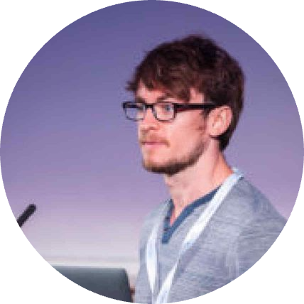
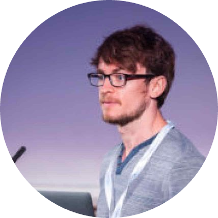
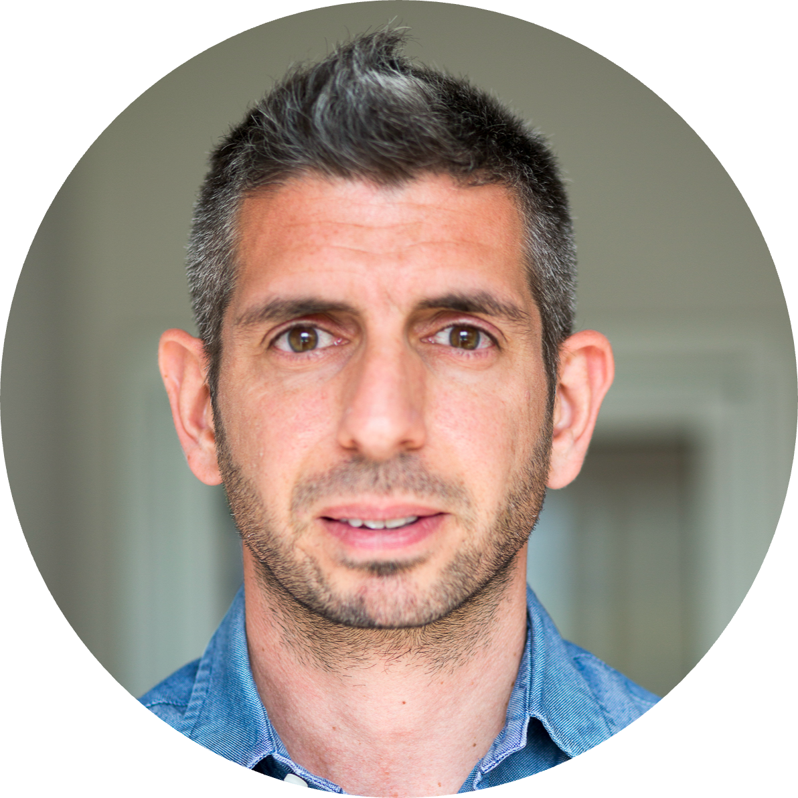
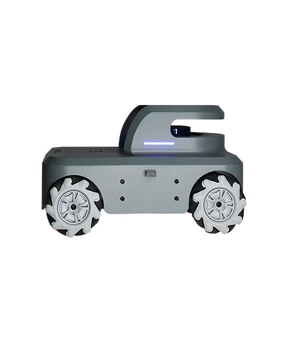

About
Welcome to the second edition of the London Robotics & AI Summer School.
This summer school will be in-person at University College London (UCL) in June 24.
Join us at UCL East campus of University College London (UCL) for the second series of the London Summer
School in Robotics & AI,
jointly organised by University College London (UCL), Queen Mary University of London (QMUL), Imperial College
London (ICL),
and King's College London (KCL). This second edition will be a, one-day event, with presentations, followed by
a short robotic
hackathon in which you will be challenged to update the ROS code of a small robotic mobile platform to
navigate in mazes: can
you beat our robot baseline?
Registration
The event is free! But places are limited (first come, first served).
You'll need to sign up to participate. Registration opens on 01/05/2024 here:
https://www.eventbrite.co.uk/e/
You'll need to sign up to participate. Registration opens on 01/05/2024 here:
https://www.eventbrite.co.uk/e/
Programme
This is a "Bring Your Own Laptop" event, if you want to code.
9:00-9:45 Registration and Breakfast
9:45-10:00 Welcome and Introduction
10:00-10:30 First Academic Talk (Shan Luo)
10:30-11:00 Second Academic Talk (Edward Johns)
11:00-11:30 Third Academic Talk (Lorenzo Jamone)
11:30-13:00 Lunch Break
13:00-13:30 Tutorial Talk (Dimitrios Kanoulas)
13:30-16:00 Mini-Hackathon (coding)
16:00-16:30 Coffee Break
16:30-18:00 Mini-Hackathon (competition)
18:00-19:00 Drinks reception
 




9:45-10:00 Welcome and Introduction
10:00-10:30 First Academic Talk (Shan Luo)
10:30-11:00 Second Academic Talk (Edward Johns)
11:00-11:30 Third Academic Talk (Lorenzo Jamone)
11:30-13:00 Lunch Break
13:00-13:30 Tutorial Talk (Dimitrios Kanoulas)
13:30-16:00 Mini-Hackathon (coding)
16:00-16:30 Coffee Break
16:30-18:00 Mini-Hackathon (competition)
18:00-19:00 Drinks reception
Invited Speakers
Click on a speaker for title, abstract, and bio.
Academic Speakers
Shan Luo
King's College London (KCL), UK
Edward Johns
Imperial College London (ICL), UK
Industrial & Tutorial Speakers
Francesco
Nori
Nori
Google DeepMind, UK
Dimitrios Kanoulas
University College London (UCL), UK
Robots

MyCobot
Elephant Robotics myAGV
Sponsors